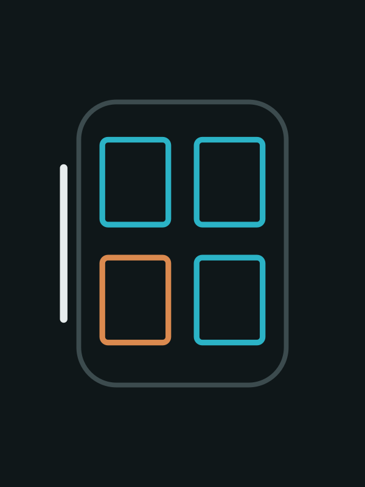

What “physical AI” means, who builds it across the stack, which products people actually use, and how it reaches the car, with the cabin and the rider’s freed-up time as the main lens.
Research questionWhat is physical AI, who builds it, what do people actually use, and how does it reach the car’s cabin and the rider?
With research assistance from several AI models (mainly Claude; Gemini for a cross-check draft) · Views are the author’s own
Cite asChuhee Lee, Physical AI and the Rider’s Cabin, October 2026 edition (data as of 13 October 2026, updated 14 October 2026), https://blueplanet-ai.github.io/physical-ai-cabin/, CC BY-NC 4.0.
Tesla reports 1.48 million active FSD (Supervised) subscriptions. Waymo reached about 500,000 paid rides a week in March 2026 and has published no higher figure since.
Source: Tesla Q2 2026 Update [8]; TechCrunch [16]Global humanoid shipments were about 13,000 in 2025 by Omdia’s count. Unitree’s prospectus claims 5,511 units and first place; Omdia ranks AgiBot first with 5,168.
Source: SCMP [36]; TechNode, citing Omdia [35]; Tech Market Briefs [33]Cabin AI is moving from voice assistants to agents that see occupants and act on seats, climate and stops. Two designs compete: keep cabin AI fenced off from driving (Waymo) or unify them in one vehicle-level agent (Geely).
Source: Waymo [17]; China Biz Insider [42]Fact: stated by the cited source. Interpretation: the author’s reading of the cited evidence. Hypothesis: expected from the evidence but not yet observed. Figures inside every takeaway are sourced.
Physical AI is AI that senses the real world and acts in it through a machine. By measurable use, the most widely used physical AI today is driving, not humanoid robots: robotaxi rides and supervised self-driving count in the hundreds of thousands a week and the millions of subscribers, while humanoids are still counted in thousands of units. Inside the car, the frontier is moving from chatbots to cabin agents that perceive occupants and operate cabin hardware.
Tesla reports 1.48 million active FSD (Supervised) subscriptions. Waymo reached about 500,000 paid rides a week in March 2026 and has published no higher figure since. Baidu’s Apollo Go passed 23 million cumulative rides, but its driverless rides fell to roughly 0.9 million in Q2 2026 after a mass-stall incident (author’s arithmetic).[8][16][22]
Global humanoid shipments were about 13,000 in 2025 by Omdia’s count. Unitree’s prospectus claims 5,511 units and first place; Omdia ranks AgiBot first with 5,168. Car factories, led by BMW–Figure, are the main proving ground.[36][35][33]
In-cabin physical AI can do what a phone cannot: seat-aware control of actuators, native vehicle state, and sensing that EU rules and Euro NCAP now require or reward. The phone stays the rider’s identity, payment and content hub (author’s analysis).[55][56]
Waymo weekly paid rides · company-reported
Bars to scale (1.1 million = full width). The grey bar repeats the last published figure; the dashed outline is Waymo’s stated target, not a forecast by the author. Sources: TechCrunch [16], InsideEVs [18], Automotive World [19], Electric Vehicles [20].
“Physical AI” became mainstream between January 2025, when NVIDIA positioned it as AI’s next wave at CES, and October 2025, when Gartner added it to its trend list. The table shows how organisations that publish a definition use the term.
| Source | Definition or framing | Includes vehicles? | Date |
|---|---|---|---|
| NVIDIA glossary | Physical AI lets autonomous systems such as cameras, robots and self-driving cars perceive, understand, reason and act in the physical world. It extends generative AI with an understanding of space and of how the 3D world behaves.[1] | Yes | Undated page, read Oct 2026 |
| NVIDIA glossary, “embodied AI” | AI integrated into physical systems, including buildings, robots and autonomous vehicles such as cars, trucks and robotaxis.[2] | Yes | Undated page, read Oct 2026 |
| Gartner, Top Strategic Technology Trends 2026 | Physical AI powers machines and devices that sense, decide and act, such as robots, drones and smart equipment.[3] | Not named in the trend summary | 20 Oct 2025 |
| Gartner, research article | Physical AI reaches beyond robots to autonomous vehicles, drones and smart infrastructure. Gartner predicts that by 2035 AI that cannot interact physically with the world will be obsolete.[4] Forecast | Yes | 1 Oct 2026 |
| Gartner, supply-chain trends | Combines AI models with IoT sensors, robotics and automation for real-time sensing, analysis and execution.[5] | n/a | 30 Jun 2026 |
| Tesla (SEC filing) | Describes its focus as bringing AI into the real world through FSD (Supervised), Robotaxi and AI robots including Optimus.[61][7] | Yes | Q1 and Q2 2026 10-Qs |
| BMW Group | Treats humanoid robots as part of a strategy to expand its automation portfolio with physical AI.[10] | Factory use | Jun–Jul 2026 |
| ITU-T Recommendation F.748.66 (standard) | International standard titled “Requirements and framework for embodied artificial intelligence systems”. Its definition text was not read for this report.[70] | Not checked | Approved 14 Dec 2025 |
| Term | What it stresses | Relation to physical AI (author’s synthesis) |
|---|---|---|
| Traditional automation | Fixed, pre-programmed rules (when this sensor fires, do that) | The boundary. Physical AI starts where fixed rules give way to learned behaviour that adapts to what the machine senses. A robot vacuum that turns a set angle at every bump is automation; one that plans around what it sees is physical AI. |
| Embodied AI | AI with a body that learns by interacting | Near-synonym. NVIDIA uses both and includes vehicles in each; academic use stresses learning through embodiment. |
| World models | Models that predict how a physical scene will evolve (e.g. NVIDIA Cosmos) | The training and simulation layer: they generate synthetic data and test policies. |
| Vision-language-action (VLA) models | One model maps camera and language input to actions | The “brain” layer, e.g. NVIDIA Alpamayo for driving.[13] |
| Robot foundation models | General policies across many robot bodies | A subset of VLA and policy models for robots (NVIDIA Isaac GR00T, Physical Intelligence, Skild AI). |
| Autonomous driving | Perception, planning and control for driving | The most commercially mature application. End-to-end and VLA approaches are bringing it closer to robotics methods. |
| Spatial intelligence | 3D understanding and generation of space | Overlaps with world models; investors count some world-model companies as physical AI.[27] |
Author’s framing. NVIDIA spans layers 1–3; Tesla and Waymo are integrated across most of the stack; Chinese humanoid makers are strongest in layer 4.
10 million user interactions in 76 days, by NIO’s count.[44]
Positions “physical AI” as AI’s next wave. Widely reported; not re-read for this edition.
The term moves from vendor keynote to analyst canon.[3]
One table per layer. “Not re-verified” rows name important players whose current status was not checked against a source for this edition; they are listed so the gaps are visible, not to rank them.
| Player | Flagship and status | Key metric | Evidence |
|---|---|---|---|
| NVIDIA Santa Clara, US | Cosmos 3 world model (launched 1 Jun 2026), Isaac GR00T N1.7 for humanoids, Alpamayo 1.5 and 2 Super for driving | Cosmos passed 10 million Hugging Face downloads (27 Jul 2026); downloads are not deployments | Company[12][15] |
| Tesla Austin, US | End-to-end FSD model (v14), trained on customer and Robotaxi data | Cumulative FSD miles approaching 12 billion | Company filing[8] |
| Geely Hangzhou, CN | “WAM” world action model behind Super Eva; debuted in the Zeekr 8X | Announced 17 Mar 2026 | Trade press[42] |
| Physical Intelligence San Francisco, US | π-series robot foundation models | $600M at about $5.6B valuation (Nov 2025); talks reported at $11B (Mar 2026) | Secondary[34] |
| Generalist AI, Odyssey, General Intuition US | Embodied models; world models; models trained on gaming video | June 2026 rounds of $400M, $310M and $320M | Crunchbase News[28] |
| Google DeepMind London, UK | Gemini 4 Argon, a physical-reasoning model for robotics, released 13 Oct 2026 through the Gemini API and AI Studio | Google reports 87% on the ERQA embodied-reasoning benchmark, ahead of other frontier models; its own benchmark claim | Company[68] |
| Wayve London, UK | GAIA-3 generative world model (15 billion parameters) for testing driving AI on rare and unsafe scenarios | Trained on ten times more data than GAIA-2; announced 2 Dec 2025 | Trade press[69] |
| Winverse AI China | Robot AI start-up founded in 2026 by a former Tencent robotics scientist; a separate company, not part of DeepSeek | DeepSeek reportedly leading a seed round at about $400M valuation (12 Oct 2026); not final | Press, citing Bloomberg[75] |
| Figure (Helix), Meta, World Labs, AgiBot (GO-1), OpenAI | Not re-verified for this edition | Gap | |
| Player | Product | Evidence in this edition |
|---|---|---|
| NVIDIA Santa Clara, US | DRIVE AGX Thor, Jetson Thor, DGX for training | DRIVE AGX paired with a MediaTek cockpit chip in a central-computer demo; Bosch’s AI extension platform is built on NVIDIA CUDA (CES 2026).[47][51] |
| Qualcomm San Diego, US | Snapdragon Cockpit Elite and Ride; combined Snapdragon Elite | Leapmotor D19 to use the combined platform.[52] Automotive revenue of $1,326M in fiscal Q2 2026, up 38% year on year.[72] At its June 2026 Investor Day Qualcomm reportedly put its automotive design-win pipeline at $65B and raised its fiscal 2029 automotive revenue target to $10B (analyst reports; the release itself was not read).[73][74] |
| MediaTek Hsinchu, TW | Dimensity Auto C-X1 cockpit chip | CES 2026 demo with NVIDIA.[47] |
| Renesas Tokyo, JP | R-Car X5H | Shown at CES 2026 (vendor blog).[53] |
| Tesla Austin, US | AI5 inference chip | Described as a step-function improvement (Q4 2025 Update).[6] |
| Black Sesame, SiMa.ai, Horizon Robotics, Huawei, Mobileye, AMD | Black Sesame (one chip for cabin and driver assistance) and SiMa.ai were seen only in trade press or demos; the rest were not re-verified for this edition. Gap | |
| Player | Status and metric | Car-industry link | Evidence |
|---|---|---|---|
| Unitree Hangzhou, CN | 5,511 humanoids shipped in 2025 (prospectus); listed on Shanghai’s STAR Market in July 2026 | — | Prospectus via secondary[33] |
| AgiBot Shanghai, CN | 10,000th unit (30 Mar 2026), 15,000th (28 Jun 2026); 5,168 shipped in 2025 per Omdia | Partnership with parts supplier Minth | Company; Omdia via TechNode[31][35] |
| UBTech Shenzhen, CN | About 1,000 humanoids in 2025 per Omdia | BYD and other plants (secondary) | Omdia via TechNode[35] |
| Figure AI California, US | Figure 02 supported production of more than 30,000 BMW X3s over about 11 months; Figure 03 in logistics from June 2026 | BMW Spartanburg | Trade press reporting BMW[9][59] |
| AEON | First humanoid pilot in a German BMW plant | BMW Leipzig | Company[10] |
| Tesla Optimus Austin, US | First-generation production lines being installed for production in 2026 | Tesla plants | Company filing[8] |
| Boston Dynamics (Hyundai), Apptronik (Mercedes), Agility, 1X, Xpeng, Xiaomi | Not re-verified for this edition | Gap | |
| Operator | Status | Key metric | As of · evidence |
|---|---|---|---|
| Waymo (Alphabet) Mountain View, US | Public service in more US cities after adding Denver, San Diego and Tampa on 1 Sep 2026 | About 500,000 paid rides a week; more than 4 million autonomous miles a week; target above 1 million rides a week by end-2026 | Sep 2026 · company via press[16][20][21] |
| Baidu Apollo Go Beijing, CN | 28 cities (Aug 2026)[23]; driverless service in Dubai on its own app and Uber | More than 23 million cumulative rides; over 4.1 million driverless rides in H1 2026 | 30 Jun 2026 · company filing[22][25] |
| Tesla FSD and Robotaxi Austin, US | Unsupervised Robotaxi in several metros; Cybercab production started; FSD approved in five European countries | 1.48 million active FSD subscriptions (excludes free trials) | Q2 2026 · company filing[8] |
| Pony.ai Guangzhou, CN | Gen-7 robotaxi in daily service; Uber deal for Europe | Fleet of 1,975 (30 Jun 2026); robotaxi revenue US$12.1M in Q2 | Q2 2026 · company[29] |
| Zoox (Amazon) Foster City, US | Paid rides in Las Vegas since 10 Aug 2026; free service in other cities | About 1 million riders during the free period | Aug 2026 · press[26] |
| WeRide, Wayve, Mobileye, May Mobility, Nuro, Momenta | WeRide’s reported fleet of about 3,400 rests on secondary sources only; the others were not re-verified | Gap | |
Schematic latitude–longitude plots without a basemap. Each black pin is a city; coloured dots show the companies based there and their main layer. Positions are approximate. Headquarters were taken from general knowledge where the sources did not state them; check against company sites before citing.
Ranked by the scale of real use, not by attention or funding. Metrics differ by product, so the order is a judgement, not a calculation.
| Rank | Product or service | Adoption metric | As of | Verification |
|---|---|---|---|---|
| 1 | Tesla FSD (Supervised) | 1.48 million active subscriptions | Q2 2026 | Company filing |
| 2 | Waymo | About 500,000 paid rides a week | Sep 2026 | Company-reported |
| 3 | Baidu Apollo Go | More than 23 million cumulative rides; 28 cities | Jun–Aug 2026 | Company filing |
| 4 | NVIDIA Cosmos | More than 10 million Hugging Face downloads | 27 Jul 2026 | Company-reported downloads, not deployments |
| 5 | Unitree humanoids | 5,511 shipped in 2025 | FY2025 | Conflicts with Omdia |
| 6 | AgiBot robots | 15,000 produced (cumulative) | 28 Jun 2026 | Company-reported production, not deployments |
| 7 | Zoox | About 1 million riders (free period) | Aug 2026 | Company-reported |
| 8 | Pony.ai | 1,975 robotaxis | 30 Jun 2026 | Company-reported |
| Context | Industrial robots | About 603,000 installed in 2025; 5 million in operation; China 54%–59% of installs | 2025 | Industry census |
Rank is the author’s judgement. Sources: Tesla [8], TechCrunch [16], Baidu [22], NVIDIA [15], Unitree [33], AgiBot [31], CNBC [26], Pony.ai [29], IFR [37].
Millions per quarter · Q2 is author’s arithmetic
H1 2026 is reported as “over” 4.1 million, so Q2 is at least about 0.9 million. A reported pause in new permits followed the 31 March stall; that report rests on secondary sources. Sources: Baidu 2026 Interim Report [22]; CnEVPost [24].
Units · company prospectus vs Omdia
Scale: 6,500 units = full width. Omdia counts about 13,300 humanoids shipped worldwide in 2025. Sources: Unitree prospectus via secondary [33]; Omdia via TechNode [35] and SCMP [36].
USD billions · Crunchbase’s broad definition
Swollen by mega-rounds; one secondary analysis estimates Waymo’s $16B round alone is about a third of the H1 2026 total. PitchBook, with a different definition, records $16.3B (Q1 2026) and $18.6B (Q2 2026). Sources: Crunchbase News [27]; PitchBook [62] [30]; Value Add VC [58].
As people move from driving to riding, their time and attention are freed up, and the cabin is where something will compete for them. Cabin AI is moving through three stages. Most cars on the road are in the first; the third is where cabin AI becomes physical AI in the sense used here.
Physical?Mostly talk; acts on simple commands
| Player | Product | Perceives | Acts on | Status · evidence |
|---|---|---|---|---|
| Waymo + Google Mountain View, US | Gemini in Waymo (Ojai vehicle) | Voice and touch; no access to real-time driving data | Cabin controls (e.g. air conditioning), journey information, pull-over request | Beta, 29 Jul 2026 · company[17][57] |
| Zoox (Amazon) Foster City, US | Purpose-built face-to-face cabin | Touch at each seat | Per-seat screens, four-zone climate, Bluetooth audio | Paid in Las Vegas since 10 Aug 2026 · press[26][67] |
| Geely Hangzhou, CN | Eva → Super Eva (“1+2+N” multi-agent) | Multimodal | Cabin, linked to the G-ASD 4.0 driving system | Eva in production Aug 2025; Super Eva announced Mar 2026 · trade press[41][40] |
| Li Auto Beijing, CN | Mind GPT | Voice; RGB+IR camera | Vehicle functions, family scheduling, media | OTA Jan 2025 · secondary[43] |
| BMW + Amazon Munich, DE | Intelligent Personal Assistant on Alexa+ (iX3) | Voice | Vehicle functions | Germany and US from H2 2026 · company[11] |
| Mercedes-Benz Stuttgart, DE | MBUX Virtual Assistant on MB.OS (CLA), with Google-based navigation search | Voice | Vehicle functions | 2025 · company[45] |
| GM + Google Detroit, US | Gemini, plus its own native assistant | Voice; vehicle data | Vehicle functions | Native assistant expected by end-2026 · secondary[46] |
| Cerence Burlington, US | xUI with CaLLM and on-device CaLLM Edge; add-on “AI box” | Voice | Via carmaker integration | BYD global assistant (Apr 2026) · company[48][47] |
| Smart Eye Gothenburg, SE | Multimodal in-cabin agent | Gaze, emotion, driver state, cabin and exterior sensors | Connected vehicle functions | Demo, 23 Sep 2026 · company[50] |
| Bosch Gerlingen, DE | AI extension platform and AI cockpit | Vision-language understanding of interior and exterior | Assistant actions | CES 2026 · company[51] |
| Huawei, Xiaomi, Xpeng, Sony Honda Mobility | Not verified from primary sources for this edition. The In-Car AI Assistant Benchmark covers several of them.[66] | Gap | ||
Example: Waymo
Waymo says Gemini works independently of the Waymo Driver, does not control the car’s movement or routing, has no access to real-time driving data, and stays inactive unless the rider engages it. The rider can ask to pull over; the driving system decides how.[17]
| Standard | What it covers | What it means for cabin agents (author’s reading) |
|---|---|---|
| ISO 26262 (functional safety) | Hazards caused by faults in electrical and electronic systems: hardware failures and software errors.[77] | A cabin agent fenced off from driving, as at Waymo, stays outside the driving safety case. A unified agent that can influence driving brings a conversational model into SOTIF analysis, where its ways of misunderstanding a request become a safety question. |
| ISO 21448 (SOTIF) | Hazards when the system works as designed but its performance falls short, for example misreading a situation, including reasonably foreseeable misuse.[76] |
| Rule or programme | What it requires or rewards | Dates | Implication |
|---|---|---|---|
| EU drowsiness and attention warning (Delegated Reg. 2021/1341) | Must work without biometric information, including facial recognition, and may only record and keep data needed to function, within a closed-loop system.[54] | New types Jul 2022; all new cars Jul 2024 | Cameras now fitted to every new EU car cannot simply be reused for comfort or entertainment features without separate legal grounds and architecture (author’s reading). |
| EU advanced driver distraction warning (Delegated Reg. 2023/2590) | Distraction detection with similar closed-loop data wording.[55] | New types Jul 2024; all new cars 7 Jul 2026 | |
| Euro NCAP Safe Driving – Occupant Monitoring (v1.2) | 30 points for occupant monitoring, including 10 for occupant presence, of which 5 for child presence detection (e.g. a child left behind).[56] | From Jan 2026; v1.2 Jul 2026 | Seat-level occupant sensing becomes standard equipment that cabin features can build on. |
| Capability | Phone | In-cabin physical AI | Edge |
|---|---|---|---|
| Vehicle-only context (speed, route, seat occupancy, doors, cabin temperature) | Indirect or none | Native. GM’s stated reason for its own assistant is that a general AI has no line into the vehicle’s state.[46] | Cabin |
| Actuators (climate, seats, lighting, windows, stop requests) | Only through carmaker interfaces | Direct (Waymo cabin controls; Zoox per-seat climate) | Cabin |
| Several occupants, seat by seat | One user | Seat-aware screens, audio and climate | Cabin |
| Regulated safety sensing (driver monitoring, child presence) | Not applicable | Required or scored, so always fitted | Cabin |
| Large fixed screens and spatial audio | Small screen | Built in | Cabin |
| Identity, payment, personal content, portability across vehicles | Strong | Weak unless linked to the rider’s account | Phone |
Author’s analysis based on the evidence cited. Google sits on both sides (Android, Gemini in Waymo and in GM cars), which suggests phone-ecosystem players are entering the cabin rather than being displaced by it.
| Problem | Why now | Who is already there | Why not just the phone |
|---|---|---|---|
| A shared robotaxi cabin has to suit several strangers at once | Purpose-built robotaxis are scaling (Zoox, Waymo Ojai, Tesla Cybercab) | Zoox, Waymo | Seat-level actuators and occupancy sensing exist only in the vehicle |
| Motion sickness when riders read or watch | Riders no longer drive, so screen time rises | No commercial product verified in this edition | Needs vehicle-motion data and cabin control |
| Turning mandated sensing into rider value within privacy rules | Distraction warning in all new EU cars from Jul 2026; Euro NCAP scoring | Smart Eye, LG (sensing); Cerence, Bosch (agents) | The phone cannot see the cabin |
| A rider profile that travels across operators and cars | Ride-hail networks host several robotaxi operators (Uber with Baidu, Pony.ai and others) | Uber; Google | The phone is the natural carrier: here the phone may win |
| Explaining the car’s behaviour (“why did we stop?”) | Stall incidents and first-time riders | Waymo (rider education in Gemini) | Needs authoritative vehicle state |
Framed for the industry as a whole; not a recommendation to any company. Any of these could become an opportunity brief on this site after full research.
| Player | Approach | Status and evidence |
|---|---|---|
| Tesla | End-to-end foundation model (FSD v14) | 1.48 million subscriptions; Cybercab production started in 2026.[8] A newer version on Robotaxi is reported only in an earnings-call summary.[63] |
| Waymo | Multi-sensor Waymo Driver; sixth-generation system in the Ojai | Company-published safety statistics were not re-read for this edition and are not used. |
| NVIDIA | Alpamayo open reasoning VLA (R1, 1.5, 2 Super) | Mercedes-Benz CLA named as the first passenger car to use it.[13][12] |
| Geely | WAM world action model; G-ASD 4.0 | Rolling out from April 2026.[42] |
| Wayve | End-to-end driving model, tested in the GAIA-3 world model | GAIA-3 generates safety-critical scenarios for offline testing; Wayve reports that simulated results mirror real-world driving in early studies.[69] |
| Li Auto, Xpeng, Momenta, Mobileye | Not re-verified for this edition Gap | |
World models are now pitched as a way to generate rare training and test scenarios. NVIDIA’s claim that real-world data is no longer the moat is a vendor claim, not an independent finding.[14]
| Use | Who | Evidence | Maturity (author’s) |
|---|---|---|---|
| Body-shop part loading | Figure 02 at BMW Spartanburg | More than 30,000 X3s over about 11 months[9] | Pilot to production |
| Logistics sequencing | Figure 03 at BMW Spartanburg | Started June 2026; robot count not disclosed[59] | Early deployment |
| Humanoid pilot in Europe | AEON at BMW Leipzig | First in a German BMW plant[10] | Pilot |
| Screw-driving in a car plant | Xiaomi humanoid | 98% task success, per a TrendForce bulletin[38] | Validation |
| Virtual factory planning | BMW, on NVIDIA Omniverse | Planning across more than 30 sites; more than 40 new or updated models to be prepared virtually by 2027; planning costs projected to fall by up to 30% (Jun 2025)[71] | In production use |
| Robotic charging, automated valet parking | Not researched for this edition Gap | ||
Does it break out of about 500,000 toward the stated 1 million-plus target? First paid rides outside the US would also count.
Recovery from about 0.9 million in Q2 2026 toward the 3 million-plus of late 2025 and early 2026, after the permit pause.
FSD subscriptions, paid Robotaxi miles and Cybercab deployments in the Q3 2026 update.
Gemini in Waymo leaving beta; BMW’s Alexa+ assistant in customer cars; GM’s native assistant; and whether any operator lets a cabin agent control seats or windows, or links cabin and driving agents.
Question. What is physical AI, who are the main players across the stack, which products are used most, and how does it apply to the car, with the cabin and rider experience as the main lens?
Scope. Global, whole stack. Placed under Shifts / Mobility on this site. Neutral and industry-wide: no recommendation is made to any company.
Sources. Official and primary sources first (company filings and releases, regulators, standards bodies), then analyst research, then trade press. Each reference carries its type and date. Company-reported, analyst and forecast numbers are labelled. Two figures were re-checked against primary documents for this page: Baidu’s H1 2026 rides (2026 Interim Report) and Euro NCAP’s occupant-monitoring points (protocol v1.2).
What this report is not. The ranking, the working definition, the stack diagram, maturity ratings and the “why not just the phone” and opportunity tables are the author’s analysis, not sourced figures.
Mega Trends Outlook 2040 (Trend 1: AI becomes physical infrastructure)[64] · Mobility Product Outlook 2026–2036 (robotaxi and shared-vehicle interiors)[65] · In-Car AI Assistant Benchmark · Agentic AI and the Consumer
Personal research by Chuhee Lee. Research, source verification and drafting were carried out with several AI models: mainly Claude (Anthropic), with Gemini (Google) used for a second draft that was cross-checked against sources before anything from it was added. Every factual claim is sourced to the references listed below. Topic selection, framing and conclusions are the author’s. These are personal research projects; the views are the author’s own and do not represent any employer or organization. No company named sponsors, reviews or endorses this report, and product names and trademarks belong to their owners. Licensed under CC BY-NC 4.0.